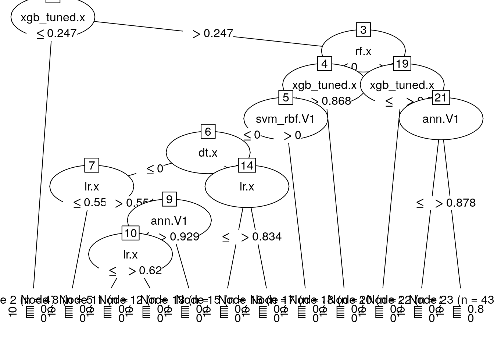
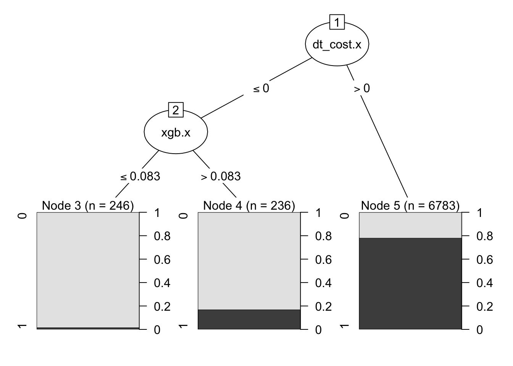
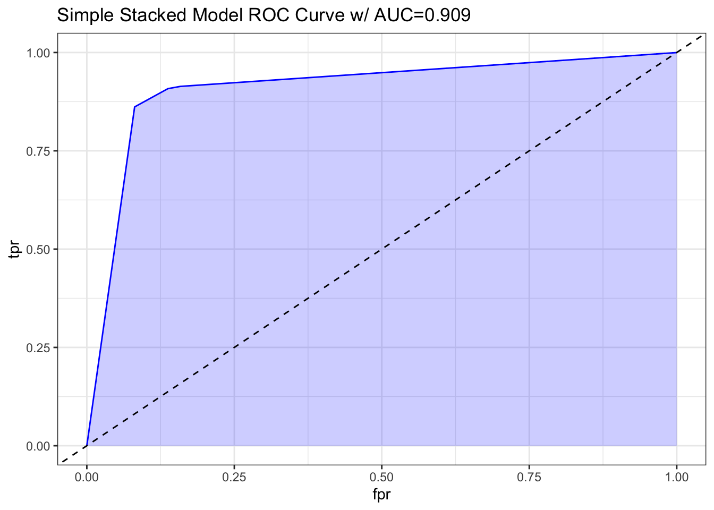

10 Stacked Model with Decision Tree (SM)
10.1 Introduction
After completing all assigned model builds, we will construct a two-stage stacked ensemble.
In the initial stage, we will employ solely the fundamental L1 models as base learners.
In the subsequent stage, we will integrate all complex L1 models like the advanced LR and fine-tuned RF into the base learner set. Our primary objective is to maximize the predictive precision of the base models provided by L1 models through a multi-level stacked ensemble approach.
10.2 Load Data
# Load data
test <- read.csv('Train Test Set/test.csv')
lr <- read.csv('Predictions/prediction_lr_probability.csv')
lr_complex <- read.csv('Predictions/prediction_lr_complex_probability.csv')
knn <- read.csv('Predictions/prediction_knn_probability.csv')
knn_tuned <- read.csv('Predictions/prediction_knn_tuned_probability.csv')
ann <- read.csv('Predictions/prediction_ann_probability.csv')
ann_complex <- read.csv('Predictions/prediction_ann_complex_probability.csv')
dt <- read.csv('Predictions/prediction_dt.csv')
dt_cost <- read.csv('Predictions/prediction_dt_cost.csv')
svm_vanilla <- read.csv('Predictions/prediction_svm_vanilla.csv')
svm_rbf <- read.csv('Predictions/prediction_svm_rbf.csv')
rf <- read.csv('Predictions/prediction_rf.csv')
rf_tuned <-read.csv('Predictions/prediction_rf_tuned.csv')
xgb <- read.csv('Predictions/prediction_xgb_probability.csv')
xgb_tuned <- read.csv('Predictions/prediction_xgb_tuned.csv')
# Display statistics
summary(test)## gender_female gender_male age fam_history_overweight1
## Min. :0.0000 Min. :0.0000 Min. :14.00 Min. :0.0000
## 1st Qu.:0.0000 1st Qu.:0.0000 1st Qu.:20.00 1st Qu.:1.0000
## Median :0.0000 Median :1.0000 Median :23.00 Median :1.0000
## Mean :0.4962 Mean :0.5038 Mean :23.89 Mean :0.8216
## 3rd Qu.:1.0000 3rd Qu.:1.0000 3rd Qu.:26.00 3rd Qu.:1.0000
## Max. :1.0000 Max. :1.0000 Max. :56.00 Max. :1.0000
## freq_consumption_hc_food1 veg_freq num_meals
## Min. :0.0000 Min. :1.000 Min. :1.000
## 1st Qu.:1.0000 1st Qu.:2.000 1st Qu.:3.000
## Median :1.0000 Median :2.342 Median :3.000
## Mean :0.9123 Mean :2.440 Mean :2.765
## 3rd Qu.:1.0000 3rd Qu.:3.000 3rd Qu.:3.000
## Max. :1.0000 Max. :3.000 Max. :4.000
## food_between_meals_frequently food_between_meals_never
## Min. :0.000 Min. :0.00000
## 1st Qu.:0.000 1st Qu.:0.00000
## Median :0.000 Median :0.00000
## Mean :0.117 Mean :0.01436
## 3rd Qu.:0.000 3rd Qu.:0.00000
## Max. :1.000 Max. :1.00000
## food_between_meals_sometimes smoke1 water_daily
## Min. :0.0000 Min. :0.00000 Min. :1.000
## 1st Qu.:1.0000 1st Qu.:0.00000 1st Qu.:1.788
## Median :1.0000 Median :0.00000 Median :2.000
## Mean :0.8443 Mean :0.01137 Mean :2.030
## 3rd Qu.:1.0000 3rd Qu.:0.00000 3rd Qu.:2.551
## Max. :1.0000 Max. :1.00000 Max. :3.000
## caloric_beverages1 activity_freq tech_use alcohol_never
## Min. :0.00000 Min. :0.000000 Min. :0.0000 Min. :0.0000
## 1st Qu.:0.00000 1st Qu.:0.009276 1st Qu.:0.0000 1st Qu.:0.0000
## Median :0.00000 Median :1.000000 Median :0.5739 Median :0.0000
## Mean :0.03343 Mean :0.982525 Mean :0.6188 Mean :0.2514
## 3rd Qu.:0.00000 3rd Qu.:1.592795 3rd Qu.:1.0000 3rd Qu.:1.0000
## Max. :1.00000 Max. :3.000000 Max. :2.0000 Max. :1.0000
## alcohol_sometimes transport_bike transport_motorbike
## Min. :0.0000 Min. :0.000000 Min. :0.000000
## 1st Qu.:0.0000 1st Qu.:0.000000 1st Qu.:0.000000
## Median :1.0000 Median :0.000000 Median :0.000000
## Mean :0.7227 Mean :0.001349 Mean :0.001734
## 3rd Qu.:1.0000 3rd Qu.:0.000000 3rd Qu.:0.000000
## Max. :1.0000 Max. :1.000000 Max. :1.000000
## transport_public_transportation transport_walking obesity_leveloverweight
## Min. :0.0000 Min. :0.00000 Min. :0.0000
## 1st Qu.:1.0000 1st Qu.:0.00000 1st Qu.:0.0000
## Median :1.0000 Median :0.00000 Median :1.0000
## Mean :0.8022 Mean :0.02274 Mean :0.7338
## 3rd Qu.:1.0000 3rd Qu.:0.00000 3rd Qu.:1.0000
## Max. :1.0000 Max. :1.00000 Max. :1.0000
## eating_habit_binary physical_activity_binary age_group_young_adult
## Min. :1.000 Min. :-2.0000 Min. :0.000
## 1st Qu.:2.308 1st Qu.:-0.2696 1st Qu.:1.000
## Median :2.333 Median : 0.2844 Median :1.000
## Mean :2.372 Mean : 0.3638 Mean :0.901
## 3rd Qu.:2.667 3rd Qu.: 1.0000 3rd Qu.:1.000
## Max. :3.000 Max. : 3.0000 Max. :1.000
## age_group_adult age_group_senior
## Min. :0.00000 Min. :0.000000
## 1st Qu.:0.00000 1st Qu.:0.000000
## Median :0.00000 Median :0.000000
## Mean :0.05212 Mean :0.003565
## 3rd Qu.:0.00000 3rd Qu.:0.000000
## Max. :1.00000 Max. :1.000000## x
## Min. :0.0023
## 1st Qu.:0.5783
## Median :0.8975
## Mean :0.7329
## 3rd Qu.:0.9721
## Max. :0.9999## x
## Min. :0.0000
## 1st Qu.:0.5404
## Median :0.9210
## Mean :0.7333
## 3rd Qu.:0.9855
## Max. :1.0000## x
## Min. :0.5000
## 1st Qu.:0.7723
## Median :0.9109
## Mean :0.8657
## 3rd Qu.:0.9802
## Max. :1.0000## x
## Min. :0.5000
## 1st Qu.:0.7647
## Median :0.9375
## Mean :0.8771
## 3rd Qu.:1.0000
## Max. :1.0000## V1
## Min. :0.08761
## 1st Qu.:0.53668
## Median :0.90047
## Mean :0.73205
## 3rd Qu.:0.97776
## Max. :1.00227## V1
## Min. :0.04298
## 1st Qu.:0.51153
## Median :0.91891
## Mean :0.73173
## 3rd Qu.:0.97819
## Max. :0.97998## x
## Min. :0.0000
## 1st Qu.:1.0000
## Median :1.0000
## Mean :0.7505
## 3rd Qu.:1.0000
## Max. :1.0000## x
## Min. :0.0000
## 1st Qu.:1.0000
## Median :1.0000
## Mean :0.9323
## 3rd Qu.:1.0000
## Max. :1.0000## V1
## Min. :0.0000
## 1st Qu.:1.0000
## Median :1.0000
## Mean :0.8216
## 3rd Qu.:1.0000
## Max. :1.0000## V1
## Min. :0.000
## 1st Qu.:1.000
## Median :1.000
## Mean :0.765
## 3rd Qu.:1.000
## Max. :1.000## x
## Min. :0.0000
## 1st Qu.:0.0000
## Median :1.0000
## Mean :0.7352
## 3rd Qu.:1.0000
## Max. :1.0000## x
## Min. :0.0000
## 1st Qu.:0.0000
## Median :1.0000
## Mean :0.7328
## 3rd Qu.:1.0000
## Max. :1.0000## x
## Min. :0.03182
## 1st Qu.:0.46929
## Median :0.91454
## Mean :0.72143
## 3rd Qu.:0.96696
## Max. :0.97641## x
## Min. :0.0002856
## 1st Qu.:0.0034169
## Median :0.0383439
## Mean :0.2662891
## 3rd Qu.:0.5447414
## Max. :0.9967414# Combine data
stacked <- data.frame(lr$x,
lr_complex$x,
knn$x,
knn_tuned$x,
ann$V1,
ann_complex$V1,
dt$x,
dt_cost$x,
svm_vanilla$V1,
svm_rbf$V1,
rf$x,
rf_tuned$x,
xgb$x,
xgb_tuned$x,
test$obesity_leveloverweight)
# Display statistics
str(stacked)## 'data.frame': 10379 obs. of 15 variables:
## $ lr.x : num 0.973 0.973 0.887 0.85 0.814 ...
## $ lr_complex.x : num 0.9923 0.98337 0.9159 0.00328 0.92711 ...
## $ knn.x : num 1 0.98 1 0.554 0.911 ...
## $ knn_tuned.x : num 1 1 1 0.5 1 ...
## $ ann.V1 : num 0.967 0.97 0.89 0.92 0.839 ...
## $ ann_complex.V1 : num 0.974 0.975 0.911 0.943 0.853 ...
## $ dt.x : int 1 1 1 1 1 1 1 0 1 1 ...
## $ dt_cost.x : int 1 1 1 1 1 1 1 1 1 1 ...
## $ svm_vanilla.V1 : int 1 1 1 1 1 0 1 0 1 1 ...
## $ svm_rbf.V1 : int 1 1 1 1 1 0 0 0 1 1 ...
## $ rf.x : int 1 1 1 0 1 0 1 0 1 0 ...
## $ rf_tuned.x : int 1 1 1 0 1 0 1 0 1 0 ...
## $ xgb.x : num 0.961 0.96 0.829 0.344 0.942 ...
## $ xgb_tuned.x : num 0.00345 0.01369 0.19118 0.65338 0.01415 ...
## $ test.obesity_leveloverweight: int 1 1 1 0 1 0 1 0 1 0 ...## lr.x lr_complex.x knn.x knn_tuned.x
## Min. :0.0023 Min. :0.0000 Min. :0.5000 Min. :0.5000
## 1st Qu.:0.5783 1st Qu.:0.5404 1st Qu.:0.7723 1st Qu.:0.7647
## Median :0.8975 Median :0.9210 Median :0.9109 Median :0.9375
## Mean :0.7329 Mean :0.7333 Mean :0.8657 Mean :0.8771
## 3rd Qu.:0.9721 3rd Qu.:0.9855 3rd Qu.:0.9802 3rd Qu.:1.0000
## Max. :0.9999 Max. :1.0000 Max. :1.0000 Max. :1.0000
## ann.V1 ann_complex.V1 dt.x dt_cost.x
## Min. :0.08761 Min. :0.04298 Min. :0.0000 Min. :0.0000
## 1st Qu.:0.53668 1st Qu.:0.51153 1st Qu.:1.0000 1st Qu.:1.0000
## Median :0.90047 Median :0.91891 Median :1.0000 Median :1.0000
## Mean :0.73205 Mean :0.73173 Mean :0.7505 Mean :0.9323
## 3rd Qu.:0.97776 3rd Qu.:0.97819 3rd Qu.:1.0000 3rd Qu.:1.0000
## Max. :1.00227 Max. :0.97998 Max. :1.0000 Max. :1.0000
## svm_vanilla.V1 svm_rbf.V1 rf.x rf_tuned.x
## Min. :0.0000 Min. :0.000 Min. :0.0000 Min. :0.0000
## 1st Qu.:1.0000 1st Qu.:1.000 1st Qu.:0.0000 1st Qu.:0.0000
## Median :1.0000 Median :1.000 Median :1.0000 Median :1.0000
## Mean :0.8216 Mean :0.765 Mean :0.7352 Mean :0.7328
## 3rd Qu.:1.0000 3rd Qu.:1.000 3rd Qu.:1.0000 3rd Qu.:1.0000
## Max. :1.0000 Max. :1.000 Max. :1.0000 Max. :1.0000
## xgb.x xgb_tuned.x test.obesity_leveloverweight
## Min. :0.03182 Min. :0.0002856 Min. :0.0000
## 1st Qu.:0.46929 1st Qu.:0.0034169 1st Qu.:0.0000
## Median :0.91454 Median :0.0383439 Median :1.0000
## Mean :0.72143 Mean :0.2662891 Mean :0.7338
## 3rd Qu.:0.96696 3rd Qu.:0.5447414 3rd Qu.:1.0000
## Max. :0.97641 Max. :0.9967414 Max. :1.0000## lr.x lr_complex.x knn.x knn_tuned.x ann.V1 ann_complex.V1 dt.x
## 1 0.9732532 0.992295207 1.0000000 1.000 0.9669177 0.9735016 1
## 2 0.9734308 0.983365150 0.9801980 1.000 0.9700311 0.9750530 1
## 3 0.8874567 0.915903312 1.0000000 1.000 0.8897544 0.9113093 1
## 4 0.8500151 0.003275634 0.5544554 0.500 0.9200170 0.9433609 1
## 5 0.8139555 0.927113502 0.9108911 1.000 0.8385796 0.8531013 1
## 6 0.1298087 0.071669274 0.5544554 0.625 0.1988680 0.2216504 1
## dt_cost.x svm_vanilla.V1 svm_rbf.V1 rf.x rf_tuned.x xgb.x xgb_tuned.x
## 1 1 1 1 1 1 0.9609978 0.003453249
## 2 1 1 1 1 1 0.9600214 0.013690430
## 3 1 1 1 1 1 0.8291268 0.191177532
## 4 1 1 1 0 0 0.3436254 0.653379381
## 5 1 1 1 1 1 0.9424910 0.014147544
## 6 1 0 0 0 0 0.2844975 0.921427250
## test.obesity_leveloverweight
## 1 1
## 2 1
## 3 1
## 4 0
## 5 1
## 6 010.3 Split Data
# Set seed for reproducibility
set.seed(12345)
# Define training set ratio
train_ratio <- 0.70
# Randomly sample training set
train_rows <- sample(1:nrow(stacked), train_ratio * nrow(stacked))
#### Logistics regression and Decision Tree Split
# Split data into training and testing sets
train_sm <- stacked[train_rows, ]
test_sm <- stacked[-train_rows, ]10.5 Model SM
10.5.1 Simple SM
##
## Call:
## C5.0.formula(formula = as.factor(test.obesity_leveloverweight) ~ ., data
## = train_sm)
##
##
## C5.0 [Release 2.07 GPL Edition] Tue Apr 16 19:58:26 2024
## -------------------------------
##
## Class specified by attribute `outcome'
##
## Read 7265 cases (15 attributes) from undefined.data
##
## Decision tree:
##
## xgb_tuned.x <= 0.2467366: 1 (4732/142)
## xgb_tuned.x > 0.2467366:
## :...xgb_tuned.x <= 0.3927872: 1 (363/119)
## xgb_tuned.x > 0.3927872:
## :...lr.x <= 0.8505065: 0 (2071/459)
## lr.x > 0.8505065: 1 (99/39)
##
##
## Evaluation on training data (7265 cases):
##
## Decision Tree
## ----------------
## Size Errors
##
## 4 759(10.4%) <<
##
##
## (a) (b) <-classified as
## ---- ----
## 1612 300 (a): class 0
## 459 4894 (b): class 1
##
##
## Attribute usage:
##
## 100.00% xgb_tuned.x
## 29.87% lr.x
##
##
## Time: 0.0 secs
## Overall
## xgb_tuned.x 100.00
## lr.x 29.87
## lr_complex.x 0.00
## knn.x 0.00
## knn_tuned.x 0.00
## ann.V1 0.00
## ann_complex.V1 0.00
## dt.x 0.00
## dt_cost.x 0.00
## svm_vanilla.V1 0.00
## svm_rbf.V1 0.00
## rf.x 0.00
## rf_tuned.x 0.00
## xgb.x 0.00According to the plot, it is apparent that the second-level stacked model relies solely on random forest as its predictor for decision making.
10.5.2 SM with Cost Matrix
# Build a model
model_sm_cost <- C5.0(as.factor(test.obesity_leveloverweight) ~ .,
data = train_sm,
costs = cost_matrix)##
## Call:
## C5.0.formula(formula = as.factor(test.obesity_leveloverweight) ~ ., data
## = train_sm, costs = cost_matrix)
##
##
## C5.0 [Release 2.07 GPL Edition] Tue Apr 16 19:58:26 2024
## -------------------------------
##
## Class specified by attribute `outcome'
##
## Read 7265 cases (15 attributes) from undefined.data
## Read misclassification costs from undefined.costs
##
## Decision tree:
##
## dt_cost.x > 0: 1 (6783/1474)
## dt_cost.x <= 0:
## :...xgb.x <= 0.08288926: 0 (246/4)
## xgb.x > 0.08288926: 1 (236/196)
##
##
## Evaluation on training data (7265 cases):
##
## Decision Tree
## -----------------------
## Size Errors Cost
##
## 3 1674(23.0%) 0.23 <<
##
##
## (a) (b) <-classified as
## ---- ----
## 242 1670 (a): class 0
## 4 5349 (b): class 1
##
##
## Attribute usage:
##
## 100.00% dt_cost.x
## 6.63% xgb.x
##
##
## Time: 0.0 secs
## Overall
## dt_cost.x 100.00
## xgb.x 6.63
## lr.x 0.00
## lr_complex.x 0.00
## knn.x 0.00
## knn_tuned.x 0.00
## ann.V1 0.00
## ann_complex.V1 0.00
## dt.x 0.00
## svm_vanilla.V1 0.00
## svm_rbf.V1 0.00
## rf.x 0.00
## rf_tuned.x 0.00
## xgb_tuned.x 0.00Incorporating a cost matrix into our stacked model leads to observable differences. According to the plot, L1 DT model with cost matrix and RBF SVM have emerged as top predictors, while LR is now involved in decision making and ANN were implemented during the final stages.
10.6 Evaluate SM
10.6.1 Simple SM
# Make a prediction
prediction_sm <- predict(model_sm, test_sm)
prediction_sm_prob <- predict(model_sm, test_sm, type = 'prob')
summary(prediction_sm)## 0 1
## 911 2203# Perform confusion matrix
cm_sm <- confusionMatrix(as.factor(prediction_sm),
as.factor(test_sm$test.obesity_leveloverweight),
positive = '1')
cm_sm## Confusion Matrix and Statistics
##
## Reference
## Prediction 0 1
## 0 716 195
## 1 135 2068
##
## Accuracy : 0.894
## 95% CI : (0.8827, 0.9046)
## No Information Rate : 0.7267
## P-Value [Acc > NIR] : < 2.2e-16
##
## Kappa : 0.7389
##
## Mcnemar's Test P-Value : 0.001163
##
## Sensitivity : 0.9138
## Specificity : 0.8414
## Pos Pred Value : 0.9387
## Neg Pred Value : 0.7859
## Prevalence : 0.7267
## Detection Rate : 0.6641
## Detection Prevalence : 0.7075
## Balanced Accuracy : 0.8776
##
## 'Positive' Class : 1
## Based on the confusion matrix, we observe that the model achieves an accuracy of 0.894, sensitivity of 0.9138, and a Kappa coefficient of 0.7389. We will assess these results towards the conclusion of the assignment when we have completed stacked models.
pred <- ROCR::prediction(prediction_sm_prob[,2], test_sm$test.obesity_leveloverweight)
perf <- ROCR::performance(pred, measure = "tpr", x.measure = "fpr")
auc <- ROCR::performance(pred, measure="auc")
auc <- round(auc@y.values[[1]],3)
roc.data <- data.frame(fpr=unlist(perf@x.values),
tpr=unlist(perf@y.values),
model="GLM")
ggplot(roc.data, aes(x=fpr, ymin=0, ymax=tpr)) +
geom_ribbon(alpha=0.2, fill = "blue") +
geom_line(aes(y=tpr), col = "blue") +
geom_abline(intercept = 0, slope = 1, lty = "dashed") +
labs(title = paste0("Simple Stacked Model ROC Curve w/ AUC=", auc)) +
theme_bw()
10.6.2 SM with Cost Matrix
# Make a prediction
prediction_sm_cost <- predict(model_sm_cost, test_sm)
summary(prediction_sm_cost)## 0 1
## 114 3000# Perform confusion matrix
cm_sm_cost <- confusionMatrix(as.factor(prediction_sm_cost),
as.factor(test_sm$test.obesity_leveloverweight),
positive = '1')
cm_sm_cost## Confusion Matrix and Statistics
##
## Reference
## Prediction 0 1
## 0 112 2
## 1 739 2261
##
## Accuracy : 0.762
## 95% CI : (0.7467, 0.7769)
## No Information Rate : 0.7267
## P-Value [Acc > NIR] : 4.033e-06
##
## Kappa : 0.1791
##
## Mcnemar's Test P-Value : < 2.2e-16
##
## Sensitivity : 0.9991
## Specificity : 0.1316
## Pos Pred Value : 0.7537
## Neg Pred Value : 0.9825
## Prevalence : 0.7267
## Detection Rate : 0.7261
## Detection Prevalence : 0.9634
## Balanced Accuracy : 0.5654
##
## 'Positive' Class : 1
## Based on the confusion matrix, we observe that the model achieves an accuracy of 0.762, sensitivity of 0.9991, and a Kappa coefficient of 0.1791. We will assess these results towards the conclusion of the assignment when we have completed stacked models.
10.7 Model Evaluations
With all models completed, we will now assess their performance and compile a comprehensive accuracy table that showcases essential metrics for each model. In subsequent stages, we will explore the business implications to determine the potential impact of our models.
# Load data
file_paths <- c(
'Confusion Matrix/cm_lr.csv',
'Confusion Matrix/cm_lr_complex.csv',
'Confusion Matrix/cm_knn.csv',
'Confusion Matrix/cm_knn_tuned.csv',
'Confusion Matrix/cm_ann.csv',
'Confusion Matrix/cm_ann_complex.csv',
'Confusion Matrix/cm_dt.csv',
'Confusion Matrix/cm_dt_cost.csv',
'Confusion Matrix/cm_svm_vanilla.csv',
'Confusion Matrix/cm_svm_rbf.csv',
'Confusion Matrix/cm_rf.csv',
'Confusion Matrix/cm_rf_tuned.csv',
'Confusion Matrix/cm_xgb.csv',
'Confusion Matrix/cm_xgb_tuned.csv'
)
# Store confusion matrices
cms <- list()
for (i in seq_along(file_paths)) {
cm <- read.csv(file_paths[i])
cm_obj <- confusionMatrix(matrix(c(cm[1,1],
cm[1,2],
cm[2,1],
cm[2,2]),
nrow = 2, byrow = TRUE),
positive = 'B')
var_name <- tools::file_path_sans_ext(basename(file_paths[i]))
cms[[var_name]] <- cm_obj
}
# Extract accuracy
accuracy_table <- data.frame(
Model = c('LR', 'LR Complex',
'KNN', 'KNN Tuned',
'ANN', 'ANN Complex',
'DT', 'DT with Cost',
'SVM Vanilla', 'SVM RBF',
'RF', 'RF Tuned',
'XGB', 'XGB Tuned',
'SM', 'SM with Cost'),
Accuracy = c(
round(cms[['cm_lr']]$overall[1], digits = 4),
round(cms[['cm_lr_complex']]$overall[1], digits = 4),
round(cms[['cm_knn']]$overall[1], digits = 4),
round(cms[['cm_knn_tuned']]$overall[1], digits = 4),
round(cms[['cm_ann']]$overall[1], digits = 4),
round(cms[['cm_ann_complex']]$overall[1], digits = 4),
round(cms[['cm_dt']]$overall[1], digits = 4),
round(cms[['cm_dt_cost']]$overall[1], digits = 4),
round(cms[['cm_svm_vanilla']]$overall[1], digits = 4),
round(cms[['cm_svm_rbf']]$overall[1], digits = 4),
round(cms[['cm_rf']]$overall[1], digits = 4),
round(cms[['cm_rf_tuned']]$overall[1], digits = 4),
round(cms[['cm_xgb']]$overall[1], digits = 4),
round(cms[['cm_xgb_tuned']]$overall[1], digits = 4),
round(cm_sm$overall[1], digits = 4),
round(cm_sm_cost$overall[1], digits = 4)
),
Sensitivity = c(
round(cms[['cm_lr']]$byClass[1], digits = 4),
round(cms[['cm_lr_complex']]$byClass[1], digits = 4),
round(cms[['cm_knn']]$byClass[1], digits = 4),
round(cms[['cm_knn_tuned']]$byClass[1], digits = 4),
round(cms[['cm_ann']]$byClass[1], digits = 4),
round(cms[['cm_ann_complex']]$byClass[1], digits = 4),
round(cms[['cm_dt']]$byClass[1], digits = 4),
round(cms[['cm_dt_cost']]$byClass[1], digits = 4),
round(cms[['cm_svm_vanilla']]$byClass[1], digits = 4),
round(cms[['cm_svm_rbf']]$byClass[1], digits = 4),
round(cms[['cm_rf']]$byClass[1], digits = 4),
round(cms[['cm_rf_tuned']]$byClass[1], digits = 4),
round(cms[['cm_xgb']]$byClass[1], digits = 4),
round(cms[['cm_xgb_tuned']]$byClass[1], digits = 4),
round(cm_sm$byClass[1], digits = 4),
round(cm_sm_cost$byClass[1], digits = 4)
),
Kappa = c(
round(cms[['cm_lr']]$overall[2], digits = 4),
round(cms[['cm_lr_complex']]$overall[2], digits = 4),
round(cms[['cm_knn']]$overall[2], digits = 4),
round(cms[['cm_knn_tuned']]$overall[2], digits = 4),
round(cms[['cm_ann']]$overall[2], digits = 4),
round(cms[['cm_ann_complex']]$overall[2], digits = 4),
round(cms[['cm_dt']]$overall[2], digits = 4),
round(cms[['cm_dt_cost']]$overall[2], digits = 4),
round(cms[['cm_svm_vanilla']]$overall[2], digits = 4),
round(cms[['cm_svm_rbf']]$overall[2], digits = 4),
round(cms[['cm_rf']]$overall[2], digits = 4),
round(cms[['cm_rf_tuned']]$overall[2], digits = 4),
round(cms[['cm_xgb']]$overall[2], digits = 4),
round(cms[['cm_xgb_tuned']]$overall[2], digits = 4),
round(cm_sm$overall[2], digits = 4),
round(cm_sm_cost$overall[2], digits = 4)
)
)
accuracy_table <- accuracy_table[order(accuracy_table$Accuracy, decreasing = TRUE), ]
rownames(accuracy_table) <- NULL
# Make table into kable
kable_output <- kable(accuracy_table, caption = "Accuracy Table by Model", format = "html") |>
kable_styling(bootstrap_options = c("striped", "hover")) |>
footnote(general = "All metrics are calculated using the test set.",
general_title = "Please Note:",
footnote_as_chunk = TRUE)
kable_output| Model | Accuracy | Sensitivity | Kappa |
|---|---|---|---|
| SM | 0.8940 | 0.9138 | 0.7389 |
| XGB Tuned | 0.8930 | 0.9275 | 0.7258 |
| RF | 0.8897 | 0.9258 | 0.7171 |
| RF Tuned | 0.8886 | 0.9235 | 0.7152 |
| XGB | 0.8850 | 0.9266 | 0.7029 |
| LR Complex | 0.8717 | 0.9313 | 0.6603 |
| DT | 0.8683 | 0.9216 | 0.6560 |
| LR | 0.8668 | 0.9379 | 0.6411 |
| ANN Complex | 0.8667 | 0.9220 | 0.6508 |
| ANN | 0.8666 | 0.9263 | 0.6478 |
| SVM RBF | 0.8653 | 0.9295 | 0.6419 |
| KNN Tuned | 0.8579 | 0.9206 | 0.6248 |
| KNN | 0.8454 | 0.9304 | 0.5776 |
| SVM Vanilla | 0.8114 | 0.9313 | 0.4607 |
| DT with Cost | 0.7902 | 0.9923 | 0.2955 |
| SM with Cost | 0.7620 | 0.9991 | 0.1791 |
| Please Note: All metrics are calculated using the test set. |